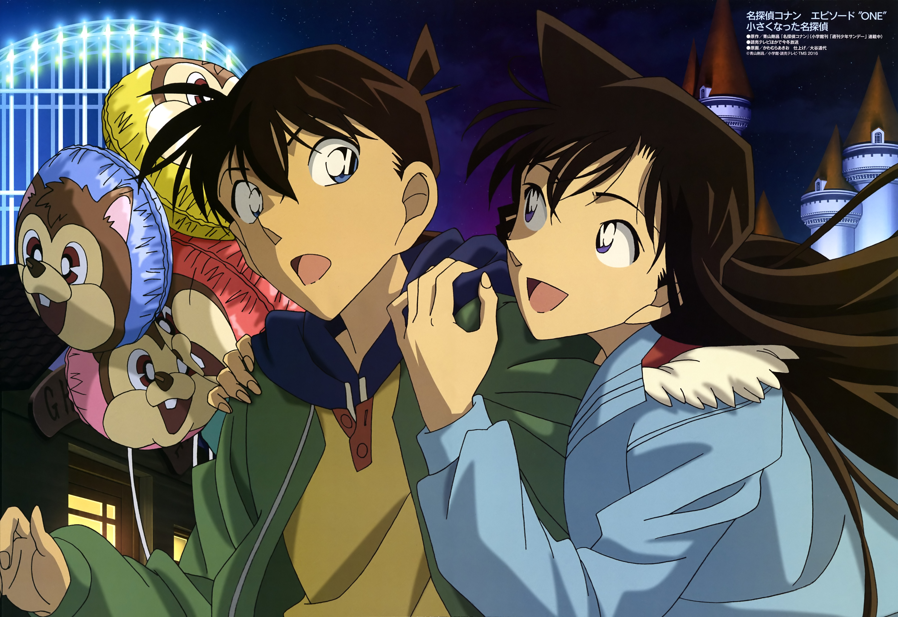

| 视频观看 | 故事简介 | 剪辑赏析 | 图片赏析 | 关于我们 |
故事简介
|
《名侦探柯南》（名探偵コナン；Detective Conan；简称《名柯》）是一部以日本漫画家青山刚昌所著漫画为原作的悬疑推理、恋爱喜剧、跨媒体故事作品，主角是身体缩小前后的高中生侦探工藤新一／小学生侦探江户川柯南，原作漫画于1994年1月5日开始连载。
我是高中生侦探工藤新一，在与青梅竹马的同学毛利兰去游乐场玩时，目击了黑衣男子的可疑交易现场。看得出神的我，没注意到从背后接近的另一名同伙。我被那名男子灌下毒药，没想到醒来之后……身体竟然缩小了！如果那些家伙发现工藤新一还活着，不仅我的性命堪忧，身边的人也会被危及。在阿笠博士的建议下，我隐瞒了身份。当小兰问及名字时，情急之下我谎称自己是“江户川柯南”。为了收集那些家伙的情报，我便寄住在父亲是侦探的小兰家中。 身体变小，头脑依旧灵活，无所不知的名侦探。真相永远只有一个 |
角色介绍
| 图片 | 角色 | 介绍 | 角色能力 |
| 工藤新一 | 工藤新一，17岁（初登场时为16岁，在第一部动画电影中过了生日后为17岁的高中生侦探。
毕业于帝丹小学和帝丹初中，现就读于帝丹高中二年B班。 自3年前父母到美国居住后独自一人居住于东京都米花町2丁目21番地 （住址来源于福尔摩斯的住址贝克街221B。“贝克”和“米花”的日文发音相同，都为“Beika”）。 |
|
|
| 服部平次 |
服部平次，年龄为17岁，是大阪改方学园高中部二年级学生，在学校时是剑道社的队长，
更是有名的西部高中生侦探，和工藤新一有“关东的工藤，关西的服部”之称 （但服部自己却说应是“关西的服部，关东的工藤”）。 居住于大阪府寝屋川市的一座和式宅院内， 是大阪府警本部长服部平藏以及服部宅家庭主妇服部静华的独子，与远山和叶是青梅竹马的同班同学。 |
|
|
| 毛利兰 | 毛利兰，年龄为16岁，曾毕业于帝丹小学和帝丹初中，现为帝丹高中二年B班的学生。 是帝丹高中空手道部的主将，曾经在全国高中空手道关东大赛中获得冠军。 居住在位于东京都米花町5丁目39番地1号的毛利侦探事务所。 父亲是私家侦探毛利小五郎，母亲是律政界女王妃英理，青梅竹马兼男友是高中生侦探工藤新一。 |
|
|
| 怪盗基德 | 黑羽快斗，男，日本漫画《魔术快斗》主人公以及《名侦探柯南》中的客串角色，也是工藤新一（《名侦探柯南》 主人公，现化名江户川柯南）的堂弟，17岁，江古田高中2年B班学生。精通易容、变声、逃脱术。 有一天突然发现其8年前去世的父亲黑羽盗一就是怪盗基德后，为找出杀害父亲的凶手，成为第二代怪盗基德， 通过大胆的盗窃行为来调查父亲的死因。 发现父亲是被神秘组织暗杀后，便与神秘组织为敌，试图瓦解其阴谋，找出传言中能流出长生不老眼泪的诅咒宝石“潘多拉”。 |
|
剪辑赏析
图片赏析
 |
 |
||
|  | |||